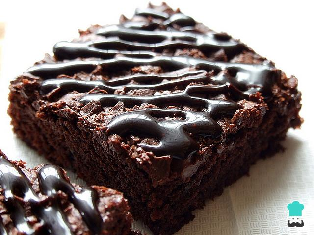

Recetas de Postres
Brownies de Chocolate

Ingredientes
| Ingrediente | Cantidad |
|---|
| Chocolate semiamargo | 200g |
| Mantequilla | 100g |
| Azúcar | 150g |
| Huevos | 2 unidades |
| Harina | 100g |
| Polvo de hornear | 1 cucharadita |
Preparación
- Derretir el chocolate y la mantequilla a baño maría.
- Agregar el azúcar y mezclar bien.
- Incorporar los huevos uno a uno y batir.
- Añadir la harina y el polvo de hornear, mezclando suavemente.
- Verter la mezcla en un molde y hornear a 180°C por 25 minutos.
- Dejar enfriar, cortar en cuadros y servir.
Flan de Vainilla
Ingredientes
| Ingrediente | Cantidad |
|---|
| Leche condensada | 1 lata |
| Leche evaporada | 1 lata |
| Huevos | 4 unidades |
| Esencia de vainilla | 1 cucharadita |
| Azúcar | 100g |
Preparación
- Derretir el azúcar en una cacerola hasta formar un caramelo.
- Verter el caramelo en un molde y distribuir bien.
- Licuar la leche condensada, la leche evaporada, los huevos y la vainilla.
- Verter la mezcla en el molde con caramelo.
- Hornear a baño maría a 180°C por 45 minutos.
- Dejar enfriar, desmoldar y servir.
Galletas de Avena y Pasas
Ingredientes
| Ingrediente | Cantidad |
|---|
| Avena | 1 taza |
| Harina | 1 taza |
| Azúcar moreno | 100g |
| Mantequilla | 100g |
| Huevo | 1 unidad |
| Pasas | 50g |
| Polvo de hornear | 1 cucharadita |
Preparación
- Batir la mantequilla con el azúcar hasta obtener una mezcla cremosa.
- Agregar el huevo y mezclar bien.
- Incorporar la harina, la avena, el polvo de hornear y las pasas.
- Formar bolitas y colocarlas en una bandeja para hornear.
- Hornear a 180°C por 15 minutos o hasta que estén doradas.
- Dejar enfriar y servir.